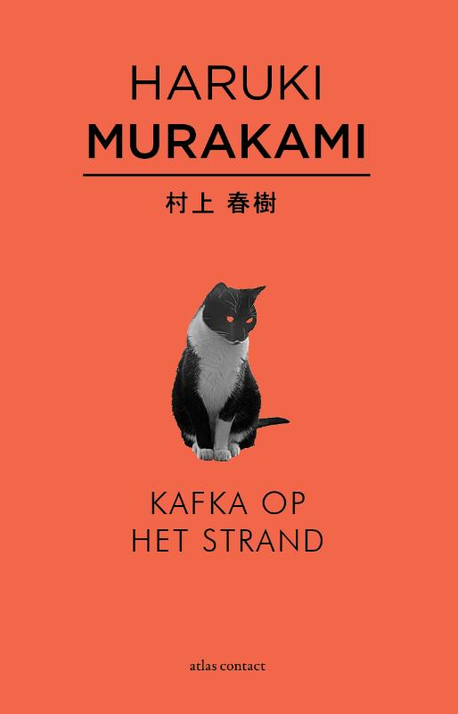

Samenvatting:
Kafka Tamura loopt op zijn vijftiende verjaardag van huis weg om te ontsnappen aan zijn onmogelijke vader. Tegelijkertijd gaat Nakata, een man op leeftijd die nooit volledig hersteld is van een bizar ongeluk in zijn jeugd, weg uit zijn vertrouwde omgeving om op zoek te gaan naar een verdwenen kat. Er wordt een brute moord gepleegd, maar de identiteit van zowel de dader als het slachtoffer is een groot raadsel. Katten praten met mensen, vissen vallen uit de lucht en in het bos verschuilen zich soldaten die sinds de Tweede Wereldoorlog niet ouder zijn geworden. 